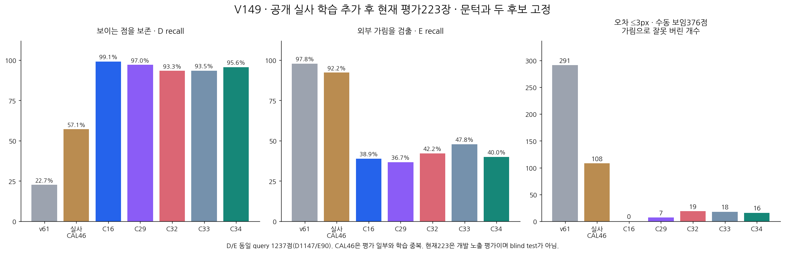

공개 실사 추가 효과가 보임 보존에는 일부 전이됐지만 외부 가림 검출은 악화됐다. C34: 보임 1097/1147, 외부 가림 36/90. 대조 C33: 보임 1072/1147, 외부 가림 43/90. 즉 보임25개 회복과 외부 가림7개 손상이 함께 발생했다. 이전 C16 대비 보임40개 손실·외부 가림1개 추가 검출에 그쳐 전체 개선이나 해결 근거가 아니다.
초기 좌표·crop·입력 순서·원래 보류45점을 그대로 유지했다. C33/C34 두 후보와 2000회 학습·raw 문턱0을 평가 전에 고정했다. 원 C16 출력의 byte 일치를 통과한 뒤 동결 추론하고, 예측 봉인 후 라벨로 지표를 계산했다. 이번 단계의 새 학습·PnP·좌표 보정은 없다.

D=보임, E=외부 가림, U=보류. 실제 D1147/E90. recall은 보류를 포함한 실제 상태 전체 분모다. 전체 입력 U45/1784와 이 표의 분모는 다르다.
| 모델 | 실제 D → [D,E,U] | 실제 E → [D,E,U] | D precision | D recall | E precision | E recall | 보류율 |
|---|---|---|---|---|---|---|---|
| v61 | [260, 887, 0] | [2, 88, 0] | 99.2% | 22.7% | 9.0% | 97.8% | 0.0% |
| 기존 실사 CAL46 | [655, 319, 173] | [3, 83, 4] | 99.5% | 57.1% | 20.6% | 92.2% | 14.3% |
| 이전 C16 | [1137, 10, 0] | [55, 35, 0] | 95.4% | 99.1% | 77.8% | 38.9% | 0.0% |
| C29 | [1113, 34, 0] | [57, 33, 0] | 95.1% | 97.0% | 49.3% | 36.7% | 0.0% |
| 시작 C32 | [1070, 77, 0] | [52, 38, 0] | 95.4% | 93.3% | 33.0% | 42.2% | 0.0% |
| 대조 C33 | [1072, 75, 0] | [47, 43, 0] | 95.8% | 93.5% | 36.4% | 47.8% | 0.0% |
| 공개 실사 추가 C34 | [1097, 50, 0] | [54, 36, 0] | 95.3% | 95.6% | 41.9% | 40.0% | 0.0% |
| 재질 | 모델 | 실제 D → [D,E,U] | 실제 E → [D,E,U] | D precision | D recall | E precision | E recall | 보류율 |
|---|---|---|---|---|---|---|---|---|
| 목재 | v61 | [145, 471, 0] | [0, 29, 0] | 100.0% | 23.5% | 5.8% | 100.0% | 0.0% |
| 목재 | 기존 실사 CAL46 | [448, 65, 103] | [2, 23, 4] | 99.6% | 72.7% | 26.1% | 79.3% | 16.6% |
| 목재 | 이전 C16 | [606, 10, 0] | [17, 12, 0] | 97.3% | 98.4% | 54.5% | 41.4% | 0.0% |
| 목재 | C29 | [585, 31, 0] | [19, 10, 0] | 96.9% | 95.0% | 24.4% | 34.5% | 0.0% |
| 목재 | 시작 C32 | [549, 67, 0] | [15, 14, 0] | 97.3% | 89.1% | 17.3% | 48.3% | 0.0% |
| 목재 | 대조 C33 | [550, 66, 0] | [14, 15, 0] | 97.5% | 89.3% | 18.5% | 51.7% | 0.0% |
| 목재 | 공개 실사 추가 C34 | [568, 48, 0] | [16, 13, 0] | 97.3% | 92.2% | 21.3% | 44.8% | 0.0% |
| 정사각형 | v61 | [115, 416, 0] | [2, 59, 0] | 98.3% | 21.7% | 12.4% | 96.7% | 0.0% |
| 정사각형 | 기존 실사 CAL46 | [207, 254, 70] | [1, 60, 0] | 99.5% | 39.0% | 19.1% | 98.4% | 11.8% |
| 정사각형 | 이전 C16 | [531, 0, 0] | [38, 23, 0] | 93.3% | 100.0% | 100.0% | 37.7% | 0.0% |
| 정사각형 | C29 | [528, 3, 0] | [38, 23, 0] | 93.3% | 99.4% | 88.5% | 37.7% | 0.0% |
| 정사각형 | 시작 C32 | [521, 10, 0] | [37, 24, 0] | 93.4% | 98.1% | 70.6% | 39.3% | 0.0% |
| 정사각형 | 대조 C33 | [522, 9, 0] | [33, 28, 0] | 94.1% | 98.3% | 75.7% | 45.9% | 0.0% |
| 정사각형 | 공개 실사 추가 C34 | [529, 2, 0] | [38, 23, 0] | 93.3% | 99.6% | 92.0% | 37.7% | 0.0% |
| 재질 | 모델 | 실제 D → [D,E,U] | 실제 E → [D,E,U] | D precision | D recall | E precision | E recall | 보류율 |
|---|---|---|---|---|---|---|---|---|
| 목재 | v61 | [154, 472, 0] | [1, 29, 0] | 99.4% | 24.6% | 5.8% | 96.7% | 0.0% |
| 목재 | 기존 실사 CAL46 | [448, 65, 113] | [2, 23, 5] | 99.6% | 71.6% | 26.1% | 76.7% | 18.0% |
| 목재 | 이전 C16 | [615, 11, 0] | [18, 12, 0] | 97.2% | 98.2% | 52.2% | 40.0% | 0.0% |
| 목재 | C29 | [593, 33, 0] | [20, 10, 0] | 96.7% | 94.7% | 23.3% | 33.3% | 0.0% |
| 목재 | 시작 C32 | [557, 69, 0] | [16, 14, 0] | 97.2% | 89.0% | 16.9% | 46.7% | 0.0% |
| 목재 | 대조 C33 | [558, 68, 0] | [15, 15, 0] | 97.4% | 89.1% | 18.1% | 50.0% | 0.0% |
| 목재 | 공개 실사 추가 C34 | [576, 50, 0] | [17, 13, 0] | 97.1% | 92.0% | 20.6% | 43.3% | 0.0% |
| 정사각형 | v61 | [115, 416, 0] | [2, 59, 0] | 98.3% | 21.7% | 12.4% | 96.7% | 0.0% |
| 정사각형 | 기존 실사 CAL46 | [207, 254, 70] | [1, 60, 0] | 99.5% | 39.0% | 19.1% | 98.4% | 11.8% |
| 정사각형 | 이전 C16 | [531, 0, 0] | [38, 23, 0] | 93.3% | 100.0% | 100.0% | 37.7% | 0.0% |
| 정사각형 | C29 | [528, 3, 0] | [38, 23, 0] | 93.3% | 99.4% | 88.5% | 37.7% | 0.0% |
| 정사각형 | 시작 C32 | [521, 10, 0] | [37, 24, 0] | 93.4% | 98.1% | 70.6% | 39.3% | 0.0% |
| 정사각형 | 대조 C33 | [522, 9, 0] | [33, 28, 0] | 94.1% | 98.3% | 75.7% | 45.9% | 0.0% |
| 정사각형 | 공개 실사 추가 C34 | [529, 2, 0] | [38, 23, 0] | 93.3% | 99.6% | 92.0% | 37.7% | 0.0% |
학습·문턱·모델 선택 필터가 아닌 진단이다.
| 재질 | 모델 | N | 보임 정답 | 가림 오판 | 보류 |
|---|---|---|---|---|---|
| 목재 | v61 | 153 | 42 | 111 | 0 |
| 목재 | 기존 실사 CAL46 | 153 | 116 | 11 | 26 |
| 목재 | 이전 C16 | 153 | 153 | 0 | 0 |
| 목재 | C29 | 153 | 147 | 6 | 0 |
| 목재 | 시작 C32 | 153 | 138 | 15 | 0 |
| 목재 | 대조 C33 | 153 | 138 | 15 | 0 |
| 목재 | 공개 실사 추가 C34 | 153 | 138 | 15 | 0 |
| 정사각형 | v61 | 223 | 43 | 180 | 0 |
| 정사각형 | 기존 실사 CAL46 | 223 | 89 | 97 | 37 |
| 정사각형 | 이전 C16 | 223 | 223 | 0 | 0 |
| 정사각형 | C29 | 223 | 222 | 1 | 0 |
| 정사각형 | 시작 C32 | 223 | 219 | 4 | 0 |
| 정사각형 | 대조 C33 | 223 | 220 | 3 | 0 |
| 정사각형 | 공개 실사 추가 C34 | 223 | 222 | 1 | 0 |
| 기준 | 후보 | 기준 오답 → 정답 | 기준 정답 → 오답 |
|---|---|---|---|
| C16 | C33 | 13 | 70 |
| C32 | C33 | 8 | 1 |
| C16 | C34 | 9 | 48 |
| C32 | C34 | 28 | 3 |
| C33 | C34 | 25 | 7 |
자기 가림은 upstream 기하 처리 대상이다. binary hidden 응답은 외부/자기 원인을 식별했다는 의미가 아니다.
| 재질 | 모델 | 사람 S 수 | hidden 응답 | 보임 응답 | 미해결 |
|---|---|---|---|---|---|
| 목재 | v61 | 21 | 12 | 9 | 0 |
| 목재 | 기존 실사 CAL46 | 21 | 3 | 13 | 5 |
| 목재 | 이전 C16 | 21 | 0 | 21 | 0 |
| 목재 | C29 | 21 | 1 | 20 | 0 |
| 목재 | 시작 C32 | 21 | 2 | 19 | 0 |
| 목재 | 대조 C33 | 21 | 2 | 19 | 0 |
| 목재 | 공개 실사 추가 C34 | 21 | 1 | 20 | 0 |
| 정사각형 | v61 | 0 | 0 | 0 | 0 |
| 정사각형 | 기존 실사 CAL46 | 0 | 0 | 0 | 0 |
| 정사각형 | 이전 C16 | 0 | 0 | 0 | 0 |
| 정사각형 | C29 | 0 | 0 | 0 | 0 |
| 정사각형 | 시작 C32 | 0 | 0 | 0 | 0 |
| 정사각형 | 대조 C33 | 0 | 0 | 0 | 0 |
| 정사각형 | 공개 실사 추가 C34 | 0 | 0 | 0 | 0 |
학습은 LAB의 입력 유효43점(D35/E8), 검증은 HALL의 입력 유효39점(D33/E6)이다. C32는 D29/E6, C33은 D28/E6, C34는 D33/E6 정답이다. 외부 가림 E6은 시작부터 모두 정답이어서 이번 이득은 보이는 점 보존이다. 공개 라벨은 하부 두 역할의 assistant weak 판정이고 사람 gold가 아니다. 원래 입력 불가2점은 보류로 유지했다. 합성 native35 기준은 두 후보 모두22/35이며 채택 조건을 통과하지 못했다.
현재223은 개발 노출 자료이며 독립 blind test가 아닙니다. 사람 S는 별도 응답 진단이며 binary hidden이 학습된 self/외부 원인 인증을 뜻하지 않습니다. 원래 reference 오차와 manualD376은 진단이며 primary 필터·좌표 수정·모델 선택에 사용하지 않았습니다. 기존5모델 저장결과와 C33/C34 source qualification/current_allowedfalse를 바꾸지 않고 두 새 모델을 모두 보고했습니다. 기존 실사 CAL46은 평가 일부와 학습 중복이 있는 과거 참고다. 공개 실사 HALL은 작은 개발 노출 자료이며 assistant 구조적 weak 라벨이다. 공개 실사 E6은 시작부터 정답이므로 신규 효과는 D 보존이다. 현재223 수치는 외부/자기 원인 분류나 query 단일 픽셀 gold를 뜻하지 않는다.